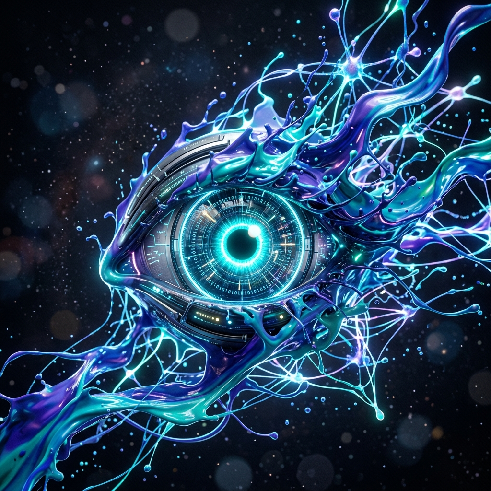
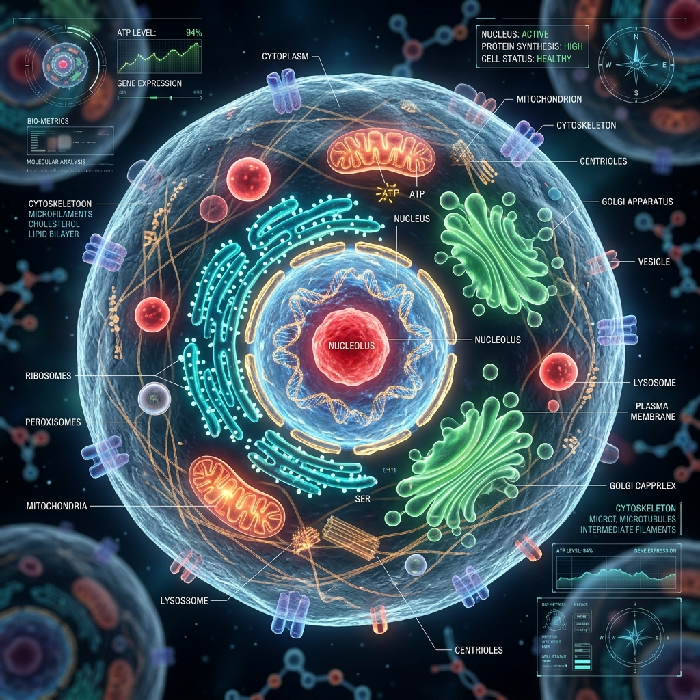
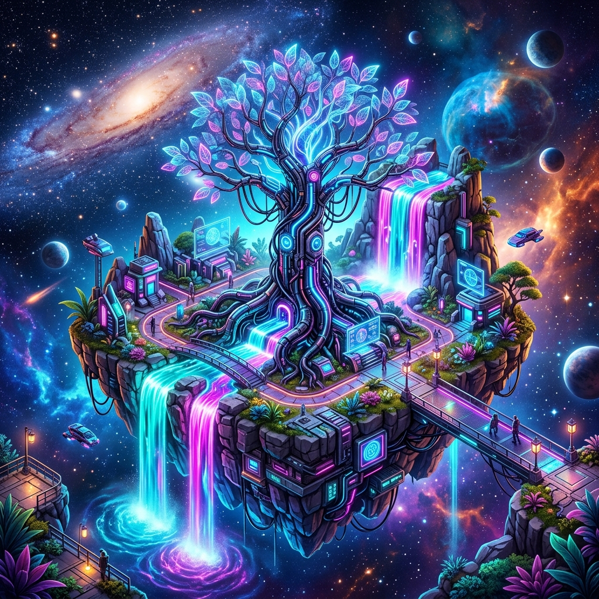
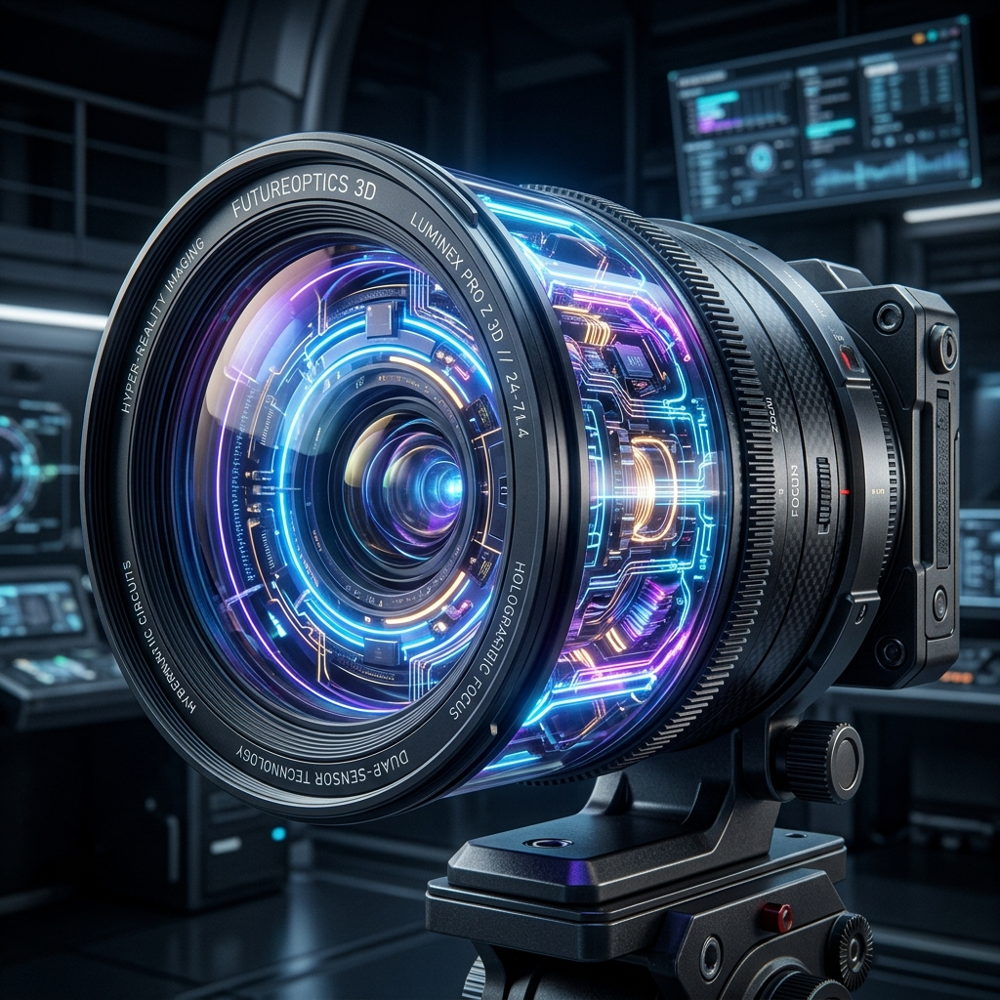

|
Kuasai seni menterjemah imaginasi kepada realiti digital. Terokai teknik penjanaan imej yang menakjubkan untuk bahan bantu mengajar yang berimpak.

Dikuasakan Imaginasi
Lihat bagaimana AI mampu menghidupkan modul pembelajaran dengan visual yang realistik dan artistik.

Ilustrasi Saintifik 3D
"Penerangan sel biologi menjadi lebih jelas dengan visual lutsinar yang realisitik."
Tokoh Sejarah
"Menghidupkan semula wira bangsa dalam kualiti sinematik untuk modul Sejarah."
Poster Digital Moden
"Membina poster cyber security dengan elemen 3D yang bersih dan profesional."
S.L.A.P
Formula ringas untuk menghasilkan visual AI yang luar biasa.
Subjek
Fokus utama scene dan aksi yang sedang dilakukan oleh watak anda.

Latar
Suasana sekeliling, waktu, dan elemen persekitaran yang spesifik.
Aura
Gaya artistik, mood, pencahayaan, dan emosi yang ingin disampaikan.

Perincian
Kualiti visual, sudut kamera, lensa, dan resolusi teknikal tinggi.
Proses Diffusion.
Kaitan Teks & Visual.
AI bermula dengan 'noise' (rawak) dan secara beransur-ansur memperhalusi imej sehingga ia menjadi bentuk yang anda inginkan melalui ribuan langkah pengiraan yang kompleks.
Teks Analisis oleh Model Bahasa
Penjanaan Noise Asas
Penyah-kaburan (Denoising) Langkah-demi-langkah